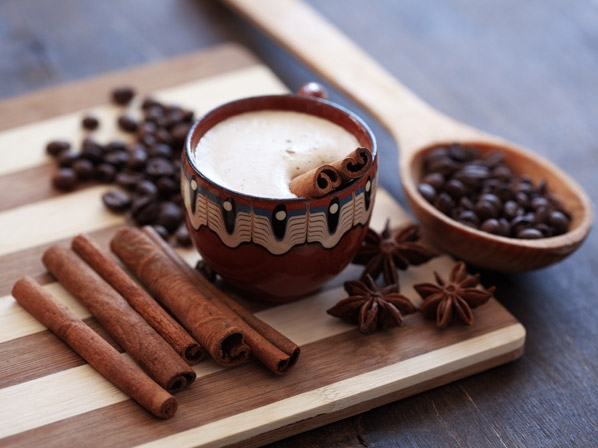

Uma mistura suave e delicada de cafés da Colômbia, Costa Rica e Ilha de Java.
Uma mistura de leite fervido com um expresso curto e chocolate amargo.
Um expresso curto com leite fervido e espuma milenar.
Uma bebeida potente preparada com açucar orgânico do Himalaia e uma infusão das folhas de Camellia sinensis.
Esta bebida é preparada com a mesma técnica chinesa inventada no fim do século 17 e contém um ingrediente secreto que faz o preço valer a pena.
Você também pode receber os grãos especiais da StarBugs Café em sua casa, faça seu pedido através deste link: Fazer pedido!
O StarBugs Café nasceu em 2017 após um erro de códido. Conheça a nossa missão.
Venha tomar um café conosco na Rua das Linhas, número 123 - Centro ou nos envie um e-mail para contato@starbugs.com.br.